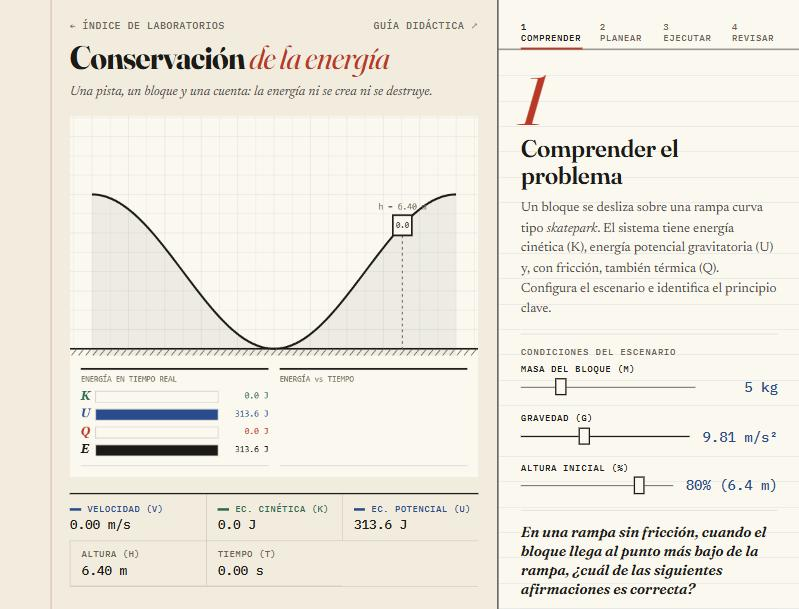
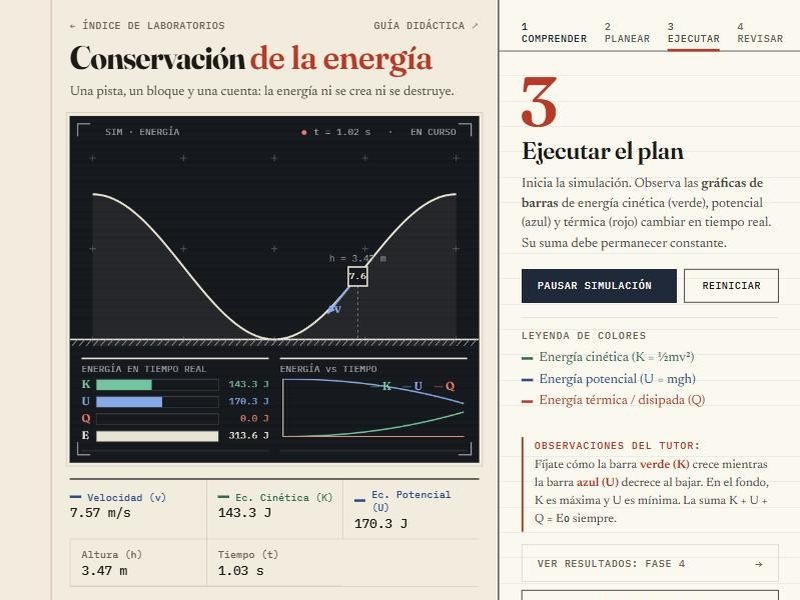
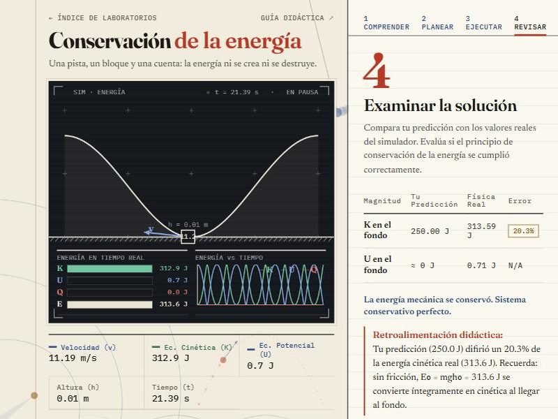

Conservación de la energía
Guía didáctica del estudiante · método de Pólya · Física — UNIR
Una pista, un bloque y una cuenta: la energía ni se crea ni se destruye, solo se transforma. Con esta guía vas a predecir y medir cuánta energía cinética gana el bloque y adónde va la que pierde cuando hay fricción.
¿Qué se conserva?
En un sistema sin fuerzas disipativas, la energía mecánica total (cinética más potencial) permanece constante en todo momento.
½·m·v² + m·g·h = constante
K = ½mv² es la energía cinética, asociada al movimiento, y U = mgh la energía potencial gravitatoria, asociada a la altura. Si hay fricción, parte de la energía se convierte en calor (energía térmica Q):
Einicial = Efinal + Qdisipada
En el simulador, Q se calcula sumando el trabajo real de la fricción a lo largo del recorrido. Por eso K + U + Q = E0 es una comprobación de verdad y no un supuesto: si el cálculo fallara, la suma no daría.
Comprender el problema
Un bloque de masa m se desliza por una pista curva tipo skatepark de 8 m de altura máxima. Parte del reposo desde una altura inicial h0 que eliges con un porcentaje de esa altura.

En tu cuaderno · variables
| Variable | Símbolo | Unidad | Tu valor |
|---|---|---|---|
| Masa del bloque | m | kg | |
| Aceleración gravitacional | g | m/s² | |
| Altura inicial | h₀ | m | |
| Energía total inicial | E₀ = m·g·h₀ | J |
Si duplicas la masa del bloque, ¿cómo cambia la energía potencial inicial? ¿Y la velocidad máxima en el fondo? Razónalo antes de mover el slider.
Concebir un plan
Antes de simular, calcula cuánta energía cinética tendrá el bloque en el punto más bajo (h = 0) usando la conservación sin fricción:
vmáx = √(2·g·h0)
En tu cuaderno · predicción
| Cálculo | Fórmula | Tu resultado |
|---|---|---|
| Energía cinética máxima | K = m·g·h₀ | J |
| Velocidad máxima | v = √(2·g·h₀) | m/s |
Introduce tu Kmáx en el slider de la Fase 2 y elige el coeficiente de fricción que quieres probar (entre 0 y 0.5).
Con μ = 0.2, ¿esperas que la energía cinética en el fondo sea mayor, menor o igual que tu predicción sin fricción? ¿Por qué?
Ejecutar el plan
Inicia la simulación y observa el intercambio de energías en las barras del lienzo: cinética en verde, potencial en azul, térmica en rojo y total en tinta negra.

En tu cuaderno · registro (pausa la simulación en cada punto)
| Posición | h (m) | v (m/s) | K (J) | U (J) | K + U (J) |
|---|---|---|---|---|---|
| Inicio | 0.0 | 0.0 | |||
| Punto medio de la bajada | |||||
| Fondo de la pista | ≈ 0 | ≈ 0 | |||
| Cima del lado opuesto |
¿Se mantiene constante la columna «K + U»? Si activas la fricción, ¿qué columna debes añadir? ¿Cuánto vale la suma K + U + Q?
Examinar la solución
Al terminar, el simulador compara tu predicción con los valores reales. Analiza el resultado y completa tus conclusiones.

En tu cuaderno · conclusiones
| Magnitud | Predicción (J) | Simulación (J) | Error (%) |
|---|---|---|---|
| K en el fondo (sin fricción) | |||
| K en el fondo (con fricción) | |||
| Energía disipada Q | — | — |
Conclusiones esperadas
- Sin fricción, K en el fondo es igual a U inicial: la energía mecánica se conserva al 100 %.
- Con fricción, K en el fondo es menor que U inicial; la diferencia es la energía Q disipada como calor.
- En ambos casos E₀ = K + U + Q siempre se cumple (primera ley de la termodinámica).
- La masa no afecta a la velocidad máxima en un sistema conservativo: vmáx = √(2·g·h₀).
¿Cómo verificarías en el mundo real que la energía se conserva? ¿Qué instrumentos usarías y qué fuentes de error esperarías en un laboratorio físico frente a este simulador?